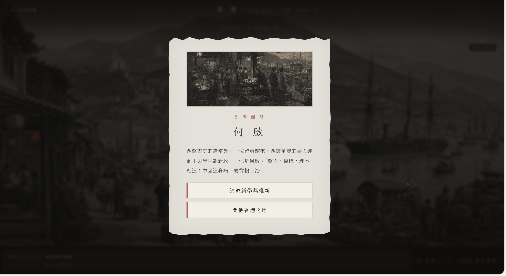
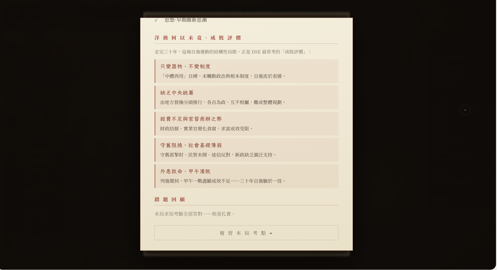

城市
城市現場
城市不是背景，而是人物、制度與壓力交會的場域。
在城市、史料與抉擇之間，理解「改革片面」如何形成。你不是旁觀歷史，而是在限制中作出判斷。 Move through places, evidence, and choices to see how partial reform was formed.You are not observing history; you judge within constraints.
學生不是缺少史實或答案，而是缺少一個能看見多重因素
如何互相牽動的學習場景。模擬遊戲把制度、人物、資源、
社會態度與後果放進同一個可探索的過程。Students need a learning situation where historical factors can be encountered as connected conditions.
進入大清地圖，城市、史料、人物抉擇與後果逐一浮現。

改革先被放回多城市、多壓力的歷史網絡。
城市不是背景，而是人物、制度與壓力交會的場域。

學生先接觸圖像與文字線索，再作判斷。

人物立場、時代限制與可行選項共同塑造行動。

結局把遊戲經歷帶回「為何失敗」的歷史論證。
你先面對「洋務運動為何失敗」這個需要追查的問題。
建構論點、論據與論證貫穿六步：從地圖紅點進入威海衛，觀察海防現場、讀取史料、辨認限制、連接後果，最後回到洋務運動成敗的論證。
從地圖上的威海衛紅點進入，歷史問題不再只是抽象結論，而是具體地點中的事件。
沉浸感不是裝飾。視覺世界讓學生把技術、制度、人物與戰爭後果放在同一個歷史空間中理解。
這一層不是再展示遊戲畫面，而是展示教師、AI、研究證據與學習數據如何支撐課堂。每張卡都是一個可被使用、觀察或改進的入口。
導入問題、遊戲探索、小組討論與歷史書寫被放在同一條課堂路線中。
提示語、追問句、工作紙與分層任務，協助學生由經歷整理出判斷。
AI 可整理學生回應、生成追問，並標示論點、證據與解釋之間的斷裂。
前後測、訪談、作品分析與課堂觀察，讓學習成效有可追蹤的證據。
選擇路徑、史料使用與論證變化，幫助教師辨認學生在哪一步失去支撐。
當證據薄弱、扣題不足或未能代入反覆出現，任務與提示就能被重新設計。
留下電郵，申請試玩《自強三十年》，讓城市、史料、人物抉擇與後果成為可討論的歷史經驗。Leave your email to request a trial of The Self-Strengthening Edition and turn cities, sources, actor choices, and consequences into discussable historical experience.